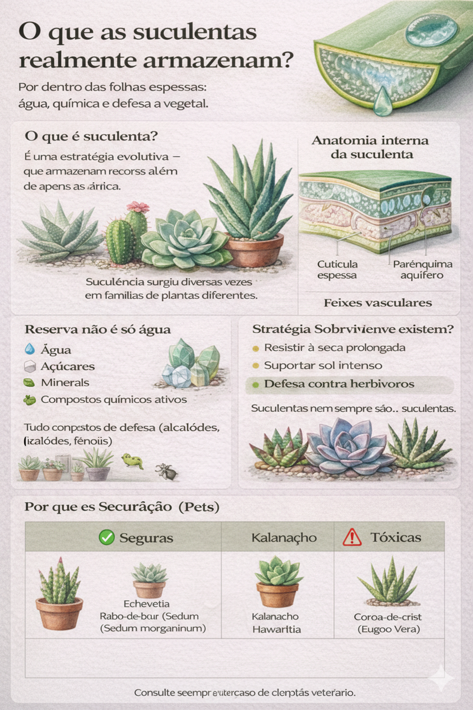

O que as suculentas realmente armazenam?

Folhas grossas, aspecto firme e aquela fama de “planta fácil”. Mas por dentro, as suculentas guardam muito mais do que água.
Entender o que elas realmente armazenam ajuda não só a cuidar melhor das plantas, mas também a manter ambientes mais seguros para quem divide a casa com pets — especialmente gatos.
🌱 O que é suculência?
Suculência é uma estratégia evolutiva que permite à planta armazenar recursos em tecidos especializados.
Essa adaptação surgiu diversas vezes ao longo da evolução, em famílias diferentes de plantas, como resposta a ambientes secos, sol intenso e escassez prolongada de água.
🔬 Anatomia interna da suculenta
Dentro das folhas espessas, encontramos estruturas específicas:
- Cutícula espessa: reduz a perda de água e protege os tecidos
- Parênquima aquífero: células que armazenam líquidos e solutos
- Feixes vasculares: responsáveis pelo transporte interno
💧 Reserva não é só água
Apesar do nome, suculentas não armazenam apenas água. No mesmo tecido, concentram:
- Água
- Açúcares
- Minerais
- Compostos químicos ativos
Muitos desses compostos fazem parte dos mecanismos naturais de defesa da planta.
🛡️ Por que essas reservas existem?
- Resistir à seca prolongada
- Suportar sol intenso
- Defesa contra herbívoros
Algumas substâncias armazenadas são amargas, irritantes ou tóxicas, justamente para desencorajar a mastigação.
🏠 Por que isso importa em casa?
O que protege a planta na natureza pode representar risco dentro de casa.
- Alguns compostos são defensivos
- Podem causar irritação ou toxicidade
- Afetam pets de forma diferente dos humanos
Em gatos, pequenas mordidas já podem causar reações, dependendo da espécie da planta e da sensibilidade individual.
🐾 Suculentas e segurança para pets
Em geral mais seguras:
- Echeveria
- Haworthia
- Sedum (algumas espécies)
Podem ser tóxicas:
- Kalanchoe
- Aloe vera
- Euphorbia (coroa-de-cristo)
⚠️ A toxicidade pode variar entre espécies da mesma família. Nunca generalize apenas pelo formato da planta.
Conhecimento é a melhor forma de prevenção.
Conteúdo educativo. Não substitui avaliação veterinária.
← Voltar para o blog